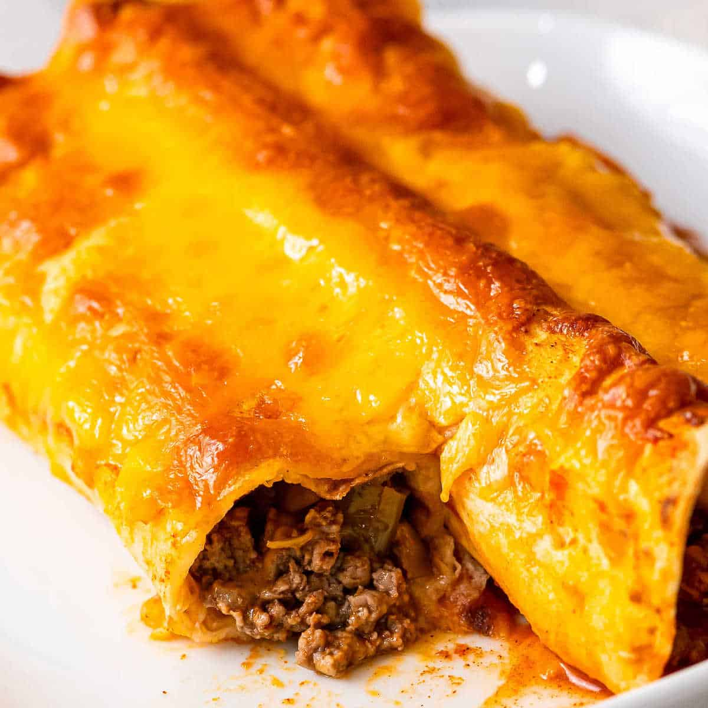
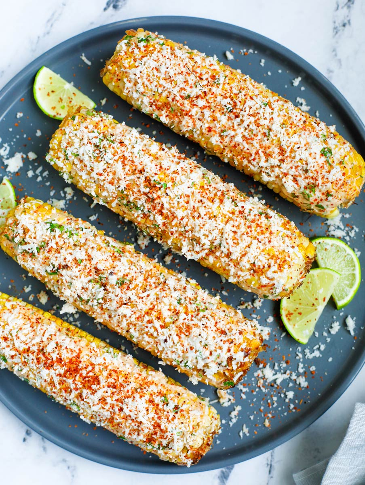

Here is a list of some of my all time favorite recipes.
1. Pineapple Casserole

Pineapple Casserole is a dish that is both salty and sweet. Makes for the perfect dessert.
2. 7 Layer Salad

This 7 Layer Salad is a fresh side dish or entree that is perfect in the spring or summer.
3. Beef Enchiladas
Beef Enchiladas are a hearty mexican dish made from scratch and it is sure to satisfy your hunger for most of the day. These are just that filling.
4. Street Corn
Street Corn is perfect as either a side dish or as the main entree. Though, I should warn you that this dish is just as messy as it is delicious. So, be sure to grab yourself plenty of napkins before you dig into this dish.